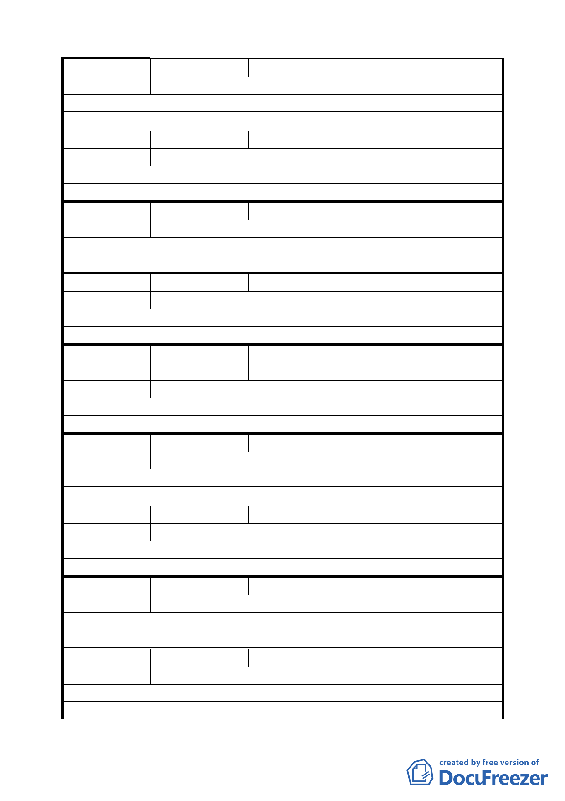

編 號 33 陳情人 陳阿來（民權西路 245 巷 25 號 2 樓）
陳 情 理 由 新莊線大橋國小站聯開分配比例太少。
建 議 辦 法 重新分配。
委 員 會 決 議 同編號 1。
編 號 34 陳情人 王怡文（延平北路三段 6 巷 1 號）
陳 情 理 由 不同意。
建 議 辦 法 不同意。
委 員 會 決 議 同編號 1。
編 號 35 陳情人 李民義（延平北路三段 8 號）
陳 情 理 由 不同意聯合開發。
建 議 辦 法 不同意聯合開發。
委 員 會 決 議 同編號 1。
編 號 36 陳情人 邱秀玉（延平北路三段 10 號）
陳 情 理 由 不同意都市計畫委員會開發案。
建 議 辦 法 不同意都市計畫委員會開發案。
委 員 會 決 議 同編號 1。
編
號 37
陳情人
李宗錕、李宗達（延平北路三段 12 號、14
號）
陳 情 理 由 不同意聯合開發。
建 議 辦 法 捷運局不經百姓同意，獨斷獨行。
委 員 會 決 議 同編號 1。
編 號 38 陳情人 江許錦簪（延平北路三段 18 巷 16 號）
陳 情 理 由 不同意。
建 議 辦 法 不同意。
委 員 會 決 議 同編號 1。
編 號 39 陳情人 謝呂美玉（延平北路三段 1 巷 5 號）
陳 情 理 由 絕對不參加共同開發。
建 議 辦 法 絕對不參加共同開發。
委 員 會 決 議 同編號 1。
編 號 40 陳情人 林祥富（延平北路三段 1 巷 5 號 2 樓）
陳 情 理 由 堅決反對共同開發。
建 議 辦 法 堅決反對共同開發。
委 員 會 決 議 同編號 1。
編 號 41 陳情人 李秋春（延平北路三段 1 巷 8 號 1 樓）
陳 情 理 由 不贊同合建（聯合開發）之條約、條例。
建 議 辦 法 不贊同合建（聯合開發）之條約、條例。
委 員 會 決 議 同編號 1。
一六